import numpy as np
import pandas as pd
import matplotlib.pyplot as plt
from matplotlib import animation
# torch
import torch
import torch.nn.functional as F
from torch_geometric_temporal.nn.recurrent import GConvGRU
# scipy
from scipy.interpolate import interp1d
# utils
import time
import pickle
from tqdm import tqdm
# rpy2
import rpy2
import rpy2.robjects as ro
from rpy2.robjects.vectors import FloatVector
from rpy2.robjects.packages import importr
import copy
import rpy2.robjects.numpy2ri as rpyn
import rpy2.robjects as robjectsST-GCN Dataset WikiMathsDatasetLoader
import
class RecurrentGCN(torch.nn.Module):
def __init__(self, node_features, filters):
super(RecurrentGCN, self).__init__()
self.recurrent = GConvGRU(node_features, filters, 2)
self.linear = torch.nn.Linear(filters, 1)
def forward(self, x, edge_index, edge_weight):
h = self.recurrent(x, edge_index, edge_weight)
h = F.relu(h)
h = self.linear(h)
return hmy functions
def load_data(fname):
with open(fname, 'rb') as outfile:
data_dict = pickle.load(outfile)
return data_dictdef save_data(data_dict,fname):
with open(fname,'wb') as outfile:
pickle.dump(data_dict,outfile)def plot(f,*args,t=None,h=2.5,**kwargs):
T,N = f.shape
if t == None: t = range(T)
fig = plt.figure()
ax = fig.subplots(N,1)
for n in range(N):
ax[n].plot(t,f[:,n],*args,**kwargs)
ax[n].set_title('node='+str(n))
fig.set_figheight(N*h)
fig.tight_layout()
plt.close()
return figdef plot_add(fig,f,*args,t=None,**kwargs):
T = f.shape[0]
N = f.shape[1]
if t == None: t = range(T)
ax = fig.get_axes()
for n in range(N):
ax[n].plot(t,f[:,n],*args,**kwargs)
return figdef make_Psi(T):
W = np.zeros((T,T))
for i in range(T):
for j in range(T):
if i==j :
W[i,j] = 0
elif np.abs(i-j) <= 1 :
W[i,j] = 1
d = np.array(W.sum(axis=1))
D = np.diag(d)
L = np.array(np.diag(1/np.sqrt(d)) @ (D-W) @ np.diag(1/np.sqrt(d)))
lamb, Psi = np.linalg.eigh(L)
return Psiebayesthresh = importr('EbayesThresh').ebayesthreshdef trim(f):
f = np.array(f)
if len(f.shape)==1: f = f.reshape(-1,1)
T,N = f.shape
Psi = make_Psi(T)
fbar = Psi.T @ f # apply dft
fbar_threshed = np.stack([ebayesthresh(FloatVector(fbar[:,i])) for i in range(N)],axis=1)
fhat = Psi @ fbar_threshed # inverse dft
return fhatdef update_from_freq_domain(signal, missing_index):
signal = np.array(signal)
T,N = signal.shape
signal_trimed = trim(signal)
for i in range(N):
signal[missing_index[i],i] = signal_trimed[missing_index[i],i]
return signalData
from torch_geometric_temporal.dataset import WikiMathsDatasetLoader
from torch_geometric_temporal.signal import temporal_signal_splitloader = WikiMathsDatasetLoader()dataset = loader.get_dataset(lags=4)train_dataset, test_dataset = temporal_signal_split(dataset, train_ratio=0.8)Train
data_train=[]
for time, snapshot in enumerate(train_dataset):
data_train.append([time,snapshot])data_train[0][1].x.shape,data_train[0][1].y.shape,data_train[0][1].edge_index.shape,data_train[0][1].edge_attr.shape(torch.Size([1068, 4]),
torch.Size([1068]),
torch.Size([2, 27079]),
torch.Size([27079]))time580T_train = time
N = len(data_train[0][1].x)edge_index = data_train[0][1].edge_index
edge_attr = data_train[0][1].edge_attrx_train = []
for i in range(time):
x_train.append(data_train[i][1].x)data_tensor = torch.Tensor()
# Iterate over the data points of the dataset
for i in x_train:
# Concatenate the data point to the tensor
data_tensor = torch.cat((data_tensor, i), dim=0)
x_train = data_tensor.reshape(time,1068,-1)
x_train.shapetorch.Size([580, 1068, 4])y_train = []
for i in range(time):
y_train.append(data_train[i][1].y)data_tensor = torch.Tensor()
# Iterate over the data points of the dataset
for i in y_train:
# Concatenate the data point to the tensor
data_tensor = torch.cat((data_tensor, i), dim=0)
y_train = data_tensor.reshape(time,1068)
y_train.shapetorch.Size([580, 1068])x_train.shape, y_train.shape(torch.Size([580, 1068, 4]), torch.Size([580, 1068]))Test
data_test=[]
for time, snapshot in enumerate(test_dataset):
data_test.append([time,snapshot])data_test[0][1].x.shape,data_test[0][1].y.shape,data_test[0][1].edge_index.shape,data_test[0][1].edge_attr.shape(torch.Size([1068, 4]),
torch.Size([1068]),
torch.Size([2, 27079]),
torch.Size([27079]))time145T_test = timex_test = []
for i in range(time):
x_test.append(data_test[i][1].x)data_tensor = torch.Tensor()
# Iterate over the data points of the dataset
for i in x_test:
# Concatenate the data point to the tensor
data_tensor = torch.cat((data_tensor, i), dim=0)
x_test = data_tensor.reshape(time,1068,-1)
x_test.shapetorch.Size([145, 1068, 4])y_test = []
for i in range(time):
y_test.append(data_test[i][1].y)data_tensor = torch.Tensor()
# Iterate over the data points of the dataset
for i in y_test:
# Concatenate the data point to the tensor
data_tensor = torch.cat((data_tensor, i), dim=0)
y_test = data_tensor.reshape(time,1068)
y_test.shapetorch.Size([145, 1068])x_test.shape, y_test.shape(torch.Size([145, 1068, 4]), torch.Size([145, 1068]))data 정리
- 데이터정리
T_test,T_train,N(145, 580, 1068)E = edge_index;Etensor([[ 0, 0, 0, ..., 1056, 1063, 1065],
[ 1, 2, 3, ..., 1059, 1064, 1066]])edge_index = Eedge_attrtensor([1., 4., 2., ..., 1., 1., 2.])- train / test
x_train_f = torch.concat([x_train[:-1,:,0], x_train[-1,:,:].T])x_test_f = torch.concat([x_test[:-1,:,0], x_train[-1,:,:].T])Random Missing Values
class Missing:
def __init__(self,df):
self.df = df
self.N = N
self.number = []
def miss(self,percent=0.5):
self.missing = copy.deepcopy(self.df)
self.percent = percent
for i in range(self.N):
#self.seed = np.random.choice(1000,1,replace=False)
#np.random.seed(self.seed)
self.number.append(np.random.choice(int(len(self.df))-10,int(len(self.df)*self.percent),replace=False))
self.missing[self.number[i],i] = float('nan')
def first_mean(self):
self.train_mean = np.array(copy.deepcopy(self.missing))
for i in range(self.N):
self.train_mean[self.number[i],i] = np.nanmean(self.missing[:,i])
def second_linear(self):
self.train_linear = pd.DataFrame(self.missing.tolist())
self.train_linear.interpolate(method='linear', inplace=True)
self.train_linear = self.train_linear.fillna(0)
self.train_linear = np.array(self.train_linear).reshape(int(len(self.df)),N)STGCN
- missing rate: 80%
- 보간방법: linear
missing 일정
stgcn_train1 = []
stgcn_test1 = []
_zero = Missing(x_train_f)
_zero.miss(percent = 0.8)
_zero.second_linear()
missing_index = _zero.number
interpolated_signal = _zero.train_linear
X = torch.tensor(np.stack([interpolated_signal[i:(T_train-4+i),:] for i in range(4)],axis = -1)).float()
y = torch.tensor(interpolated_signal[4:,:]).float()
XX = x_test
yy = y_test
real_y = y_train[4:,:]for i in range(100):
net = RecurrentGCN(node_features=4, filters=4)
optimizer = torch.optim.Adam(net.parameters(), lr=0.01)
net.train()
for epoch in range(50):
for time, (xt,yt) in enumerate(zip(X,y)):
yt_hat = net(xt, edge_index, edge_attr)
cost = torch.mean((yt_hat-yt)**2)
cost.backward()
optimizer.step()
optimizer.zero_grad()
yhat = torch.stack([net(xt, edge_index, edge_attr) for xt in X]).detach().numpy()
yyhat = torch.stack([net(xt, edge_index, edge_attr) for xt in XX]).detach().numpy()
train_mse_total_stgcn = (((real_y-yhat.squeeze()).squeeze())**2).mean()
test_mse_total_stgcn = (((yy-yyhat.squeeze()).squeeze())**2).mean()
stgcn_train1.append(train_mse_total_stgcn.tolist())
stgcn_test1.append(test_mse_total_stgcn.tolist())plt.figure(figsize=(12, 8))
plt.boxplot(stgcn_train1);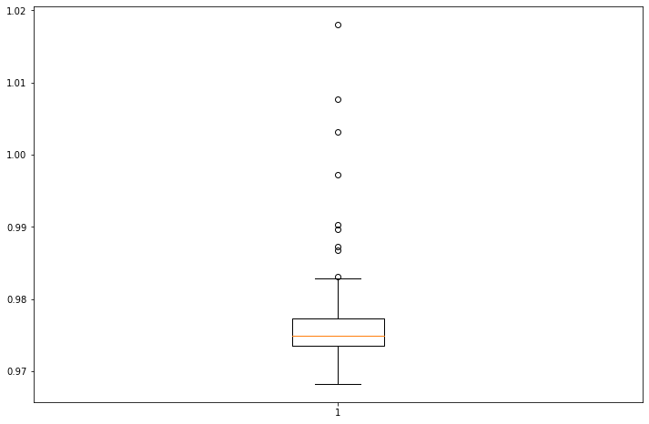
plt.figure(figsize=(12, 8))
plt.boxplot(stgcn_test1);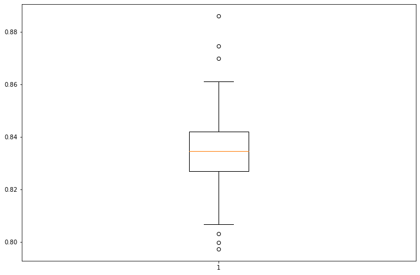
missing 다르게
stgcn_train2 = []
stgcn_test2 = []
XX = x_test
yy = y_test
real_y = y_train[4:,:]for i in range(100):
_zero = Missing(x_train_f)
_zero.miss(percent = 0.8)
_zero.second_linear()
missing_index = _zero.number
interpolated_signal = _zero.train_linear
X = torch.tensor(np.stack([interpolated_signal[i:(T_train-4+i),:] for i in range(4)],axis = -1)).float()
y = torch.tensor(interpolated_signal[4:,:]).float()
net = RecurrentGCN(node_features=4, filters=4)
optimizer = torch.optim.Adam(net.parameters(), lr=0.01)
net.train()
for epoch in range(50):
for time, (xt,yt) in enumerate(zip(X,y)):
yt_hat = net(xt, edge_index, edge_attr)
cost = torch.mean((yt_hat-yt)**2)
cost.backward()
optimizer.step()
optimizer.zero_grad()
yhat = torch.stack([net(xt, edge_index, edge_attr) for xt in X]).detach().numpy()
yyhat = torch.stack([net(xt, edge_index, edge_attr) for xt in XX]).detach().numpy()
train_mse_total_stgcn = (((real_y-yhat.squeeze()).squeeze())**2).mean()
test_mse_total_stgcn = (((yy-yyhat.squeeze()).squeeze())**2).mean()
stgcn_train2.append(train_mse_total_stgcn.tolist())
stgcn_test2.append(test_mse_total_stgcn.tolist())plt.figure(figsize=(12, 8))
plt.boxplot(stgcn_train2);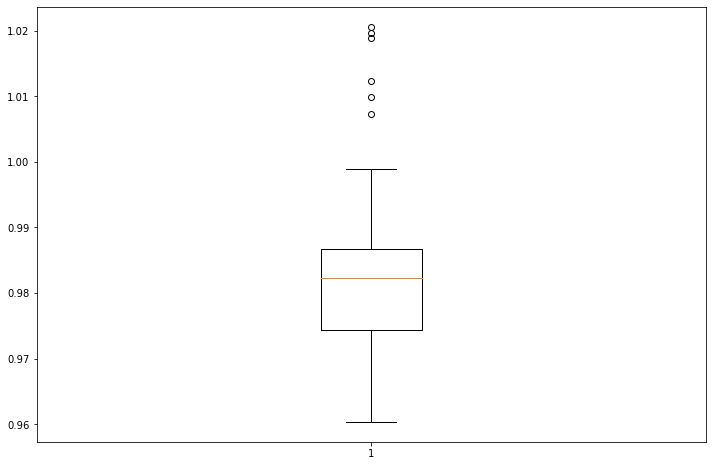
plt.figure(figsize=(12, 8))
plt.boxplot(stgcn_test2);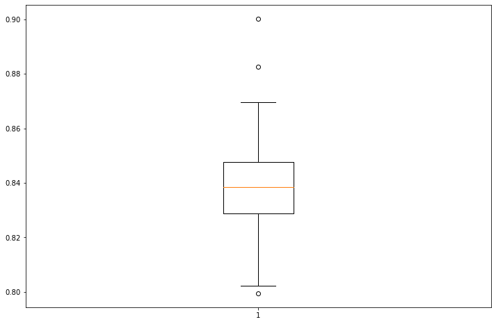
Enhencement of STGCN
- missing rate: 80%
- 보간방법: linear
- 결측치생성 + 보간
missing 일정
estgcn_train1 = []
estgcn_test1 = []
_zero = Missing(x_train_f)
_zero.miss(percent = 0.8)
_zero.second_linear()
missing_index = _zero.number
interpolated_signal = _zero.train_linear
X = torch.tensor(np.stack([interpolated_signal[i:(T_train-4+i),:] for i in range(4)],axis = -1)).float()
y = torch.tensor(interpolated_signal[4:,:]).float()
XX = x_test
yy = y_test
real_y = y_trainfor i in range(100):
net = RecurrentGCN(node_features=4, filters=4)
optimizer = torch.optim.Adam(net.parameters(), lr=0.01)
net.train()
signal = interpolated_signal.copy()
for epoch in range(50):
signal = update_from_freq_domain(signal,missing_index)
X = torch.tensor(np.stack([signal[i:(T_train+i),:] for i in range(4)],axis = -1)).reshape(T_train,N,4).float()
y = torch.tensor(signal).reshape(-1,N,1).float()[4:,:,:]
for time, (xt,yt) in enumerate(zip(X,y)):
yt_hat = net(xt, edge_index, edge_attr)
cost = torch.mean((yt_hat-yt)**2)
cost.backward()
optimizer.step()
optimizer.zero_grad()
signal = torch.concat([X[:-1,:,0], X[-1,:,:].T, yt_hat.detach().reshape(1,-1)]).squeeze()
yhat = torch.stack([net(xt, edge_index, edge_attr) for xt in X]).detach().numpy()
yyhat = torch.stack([net(xt, edge_index, edge_attr) for xt in XX]).detach().numpy()
train_mse_total_estgcn = (((real_y-yhat.squeeze()).squeeze())**2).mean()
test_mse_total_estgcn = (((yy-yyhat.squeeze()).squeeze())**2).mean()
estgcn_train1.append(train_mse_total_estgcn.tolist())
estgcn_test1.append(test_mse_total_estgcn.tolist())plt.figure(figsize=(12, 8))
plt.boxplot(estgcn_train1); 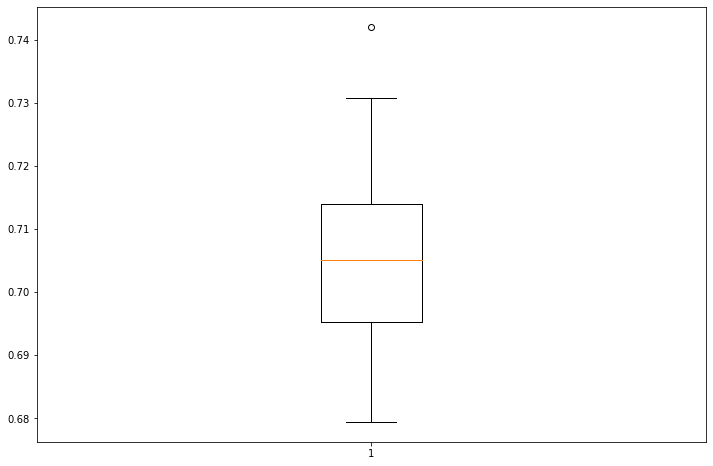
plt.figure(figsize=(12, 8))
plt.boxplot(estgcn_test1); 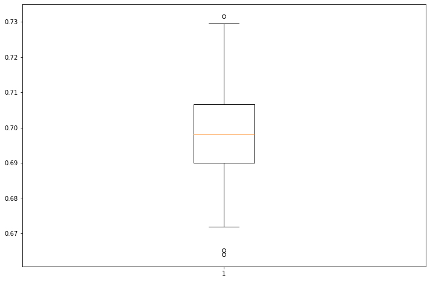
missing 매번 다르게
estgcn_train2 = []
estgcn_test2 = []
XX = x_test
yy = y_test
real_y = y_trainfor i in range(100):
_zero = Missing(x_train_f)
_zero.miss(percent = 0.8)
_zero.second_linear()
missing_index = _zero.number
interpolated_signal = _zero.train_linear
X = torch.tensor(np.stack([interpolated_signal[i:(T_train-4+i),:] for i in range(4)],axis = -1)).float()
y = torch.tensor(interpolated_signal[4:,:]).float()
net = RecurrentGCN(node_features=4, filters=4)
optimizer = torch.optim.Adam(net.parameters(), lr=0.01)
net.train()
signal = interpolated_signal.copy()
for epoch in range(50):
signal = update_from_freq_domain(signal,missing_index)
X = torch.tensor(np.stack([signal[i:(T_train+i),:] for i in range(4)],axis = -1)).reshape(T_train,N,4).float()
y = torch.tensor(signal).reshape(-1,N,1).float()[4:,:,:]
for time, (xt,yt) in enumerate(zip(X,y)):
yt_hat = net(xt, edge_index, edge_attr)
cost = torch.mean((yt_hat-yt)**2)
cost.backward()
optimizer.step()
optimizer.zero_grad()
signal = torch.concat([X[:-1,:,0], X[-1,:,:].T, yt_hat.detach().reshape(1,-1)]).squeeze()
yhat = torch.stack([net(xt, edge_index, edge_attr) for xt in X]).detach().numpy()
yyhat = torch.stack([net(xt, edge_index, edge_attr) for xt in XX]).detach().numpy()
train_mse_total_estgcn = (((real_y-yhat.squeeze()).squeeze())**2).mean()
test_mse_total_estgcn = (((yy-yyhat.squeeze()).squeeze())**2).mean()
estgcn_train2.append(train_mse_total_estgcn.tolist())
estgcn_test2.append(test_mse_total_estgcn.tolist())plt.figure(figsize=(12, 8))
plt.boxplot(estgcn_train2); 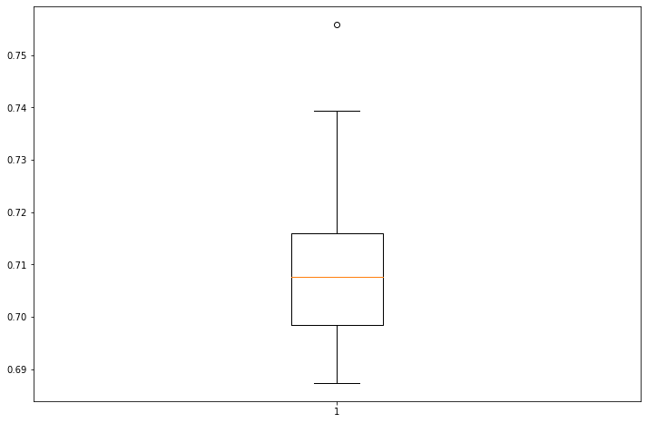
plt.figure(figsize=(12, 8))
plt.boxplot(estgcn_test2); 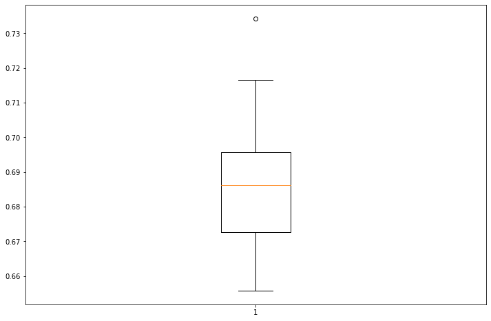
GNAR
%load_ext rpy2.ipythonThe rpy2.ipython extension is already loaded. To reload it, use:
%reload_ext rpy2.ipython%%R
library(GNAR)
library(igraph)
library(zoo)GNAR = importr('GNAR') # import GNAR
igraph = importr('igraph') # import igraph y_gnar = np.array(y_test)
Edge = np.array(edge_index)w=np.zeros((1068,1068))for k in range(27079):
w[edge_index[0][k],edge_index[1][k]] = 1%R -i y_gnar
%R -i w
%R -i T_test%%R
wikiNet <- matrixtoGNAR(w)missing 일정
%%R
gnar_train1 <- matrix(ncol=1,nrow=100)
gnar_test1 <- matrix(ncol=1,nrow=100)
for(i in 1:100){
answer <- GNARfit(vts = X_gnar, net = wikiNet, alphaOrder = 4, betaOrder = c(1,1,1,1))
prediction <- predict(answer,n.ahead=T_test)
train_mse_total_gnar = mean(residuals(answer)**2)
test_mse_total_gnar = mean((y_gnar-prediction[1:T_test])**2)
gnar_train1[i] <- train_mse_total_gnar
gnar_test1[i] <- train_mse_total_gnar
}%R -o gnar_train1
%R -o gnar_test1plt.figure(figsize=(12, 8))
plt.boxplot(gnar_train1);
plt.figure(figsize=(12, 8))
plt.boxplot(gnar_test1);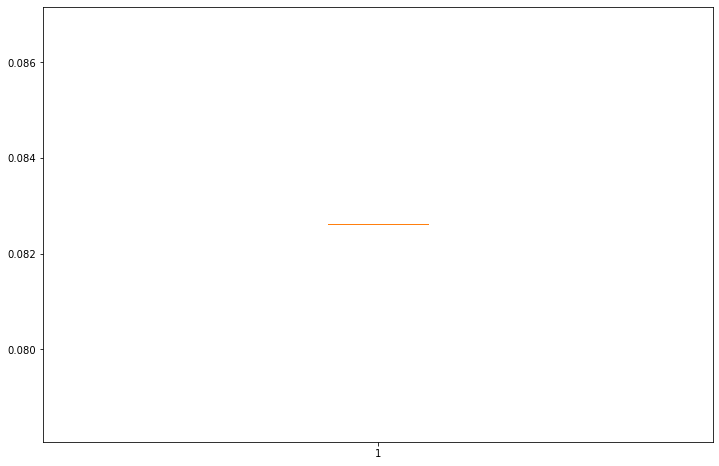
missing 매번 다르게
m = robjects.r.matrix(FloatVector(w), nrow = 1068, ncol = 1068)gnar_train2 = []
gnar_test2 = []
yy = torch.tensor(y_test).float()/tmp/ipykernel_3456764/2230476182.py:4: UserWarning: To copy construct from a tensor, it is recommended to use sourceTensor.clone().detach() or sourceTensor.clone().detach().requires_grad_(True), rather than torch.tensor(sourceTensor).
yy = torch.tensor(y_test).float()for i in range(100):
_zero = Missing(x_train_f)
_zero.miss(percent = 0.8)
_zero.second_linear()
missing_index = _zero.number
interpolated_signal = _zero.train_linear
X = torch.tensor(np.stack([interpolated_signal[i:(T_train-4+i),:] for i in range(4)],axis = -1)).float()
answer = GNAR.GNARfit(vts=robjects.r.matrix(rpyn.numpy2rpy(np.array(X).squeeze()), nrow = T_train, ncol = N),net = GNAR.matrixtoGNAR(m), alphaOrder = 4, betaOrder = FloatVector([1, 1, 1, 1]))
predict = GNAR.predict_GNARfit(answer,n_ahead=T_test)
train_mse_total_gnar = ((pd.DataFrame(GNAR.residuals_GNARfit(answer)).values.reshape(-1,N))**2).mean()
test_mse_total_gnar = ((yy - pd.DataFrame(predict).values.reshape(-1,N))**2).mean()
gnar_train2.append(train_mse_total_gnar.tolist())
gnar_test2.append(test_mse_total_gnar.tolist())WARNING: diagonal entries present in original matrix, these will be removed
WARNING: diagonal entries present in original matrix, these will be removed
WARNING: diagonal entries present in original matrix, these will be removed
WARNING: diagonal entries present in original matrix, these will be removed
WARNING: diagonal entries present in original matrix, these will be removed
WARNING: diagonal entries present in original matrix, these will be removed
WARNING: diagonal entries present in original matrix, these will be removed
WARNING: diagonal entries present in original matrix, these will be removed
WARNING: diagonal entries present in original matrix, these will be removed
WARNING: diagonal entries present in original matrix, these will be removed
WARNING: diagonal entries present in original matrix, these will be removed
WARNING: diagonal entries present in original matrix, these will be removed
WARNING: diagonal entries present in original matrix, these will be removed
WARNING: diagonal entries present in original matrix, these will be removed
WARNING: diagonal entries present in original matrix, these will be removed
WARNING: diagonal entries present in original matrix, these will be removed
WARNING: diagonal entries present in original matrix, these will be removed
WARNING: diagonal entries present in original matrix, these will be removed
WARNING: diagonal entries present in original matrix, these will be removed
WARNING: diagonal entries present in original matrix, these will be removed
WARNING: diagonal entries present in original matrix, these will be removed
WARNING: diagonal entries present in original matrix, these will be removed
WARNING: diagonal entries present in original matrix, these will be removed
WARNING: diagonal entries present in original matrix, these will be removed
WARNING: diagonal entries present in original matrix, these will be removed
WARNING: diagonal entries present in original matrix, these will be removed
WARNING: diagonal entries present in original matrix, these will be removed
WARNING: diagonal entries present in original matrix, these will be removed
WARNING: diagonal entries present in original matrix, these will be removedplt.figure(figsize=(12, 8))
plt.boxplot(gnar_train2);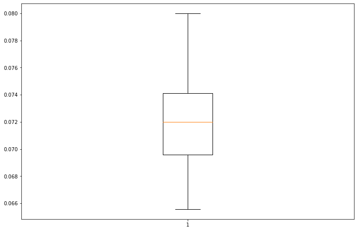
plt.figure(figsize=(12, 8))
plt.boxplot(gnar_test2);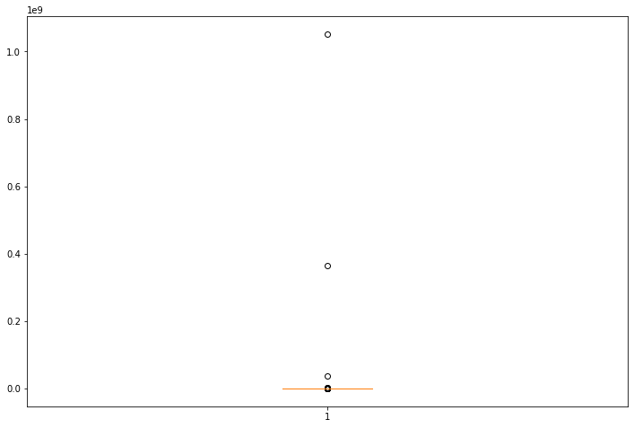
Visualization
fig = plt.figure(figsize = (12,10))
ax = fig.add_subplot(111)
bp1 = ax.boxplot(stgcn_train1, positions=[1], notch=True, widths=0.35, patch_artist=True, boxprops=dict(facecolor="C0"))
bp2 = ax.boxplot(estgcn_train1, positions=[2], notch=True, widths=0.35, patch_artist=True, boxprops=dict(facecolor="C1"))
bp3 = ax.boxplot(gnar_train1, positions=[3], notch=True, widths=0.35, patch_artist=True, boxprops=dict(facecolor="C2"))
ax.legend([bp1["boxes"][0], bp2["boxes"][0], bp3["boxes"][0]], ["STGCN", "ESTGCN", "GNAR"], loc='upper right')
ax.legend([bp1["boxes"][0], bp2["boxes"][0]], ["STGCN", "ESTGCN"], loc='upper right')
plt.text(x=0.5, y=0.94, s="TRAIN_Fix missing number_80% Missing", fontsize=25, ha="center", transform=fig.transFigure)
fig.tight_layout()
plt.show()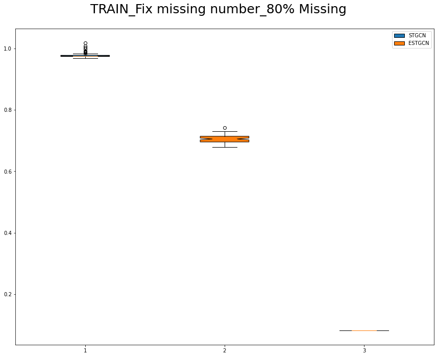
fig = plt.figure(figsize = (12,10))
ax = fig.add_subplot(111)
bp1 = ax.boxplot(stgcn_test1, positions=[1], notch=True, widths=0.35, patch_artist=True, boxprops=dict(facecolor="C0"))
bp2 = ax.boxplot(estgcn_test1, positions=[2], notch=True, widths=0.35, patch_artist=True, boxprops=dict(facecolor="C1"))
bp3 = ax.boxplot(gnar_test1, positions=[3], notch=True, widths=0.35, patch_artist=True, boxprops=dict(facecolor="C2"))
ax.legend([bp1["boxes"][0], bp2["boxes"][0], bp3["boxes"][0]], ["STGCN", "ESTGCN", "GNAR"], loc='upper right')
ax.legend([bp1["boxes"][0], bp2["boxes"][0]], ["STGCN", "ESTGCN"], loc='upper right')
plt.text(x=0.5, y=0.94, s="TEST_Fix missing number_80% Missing", fontsize=25, ha="center", transform=fig.transFigure)
fig.tight_layout()
plt.show()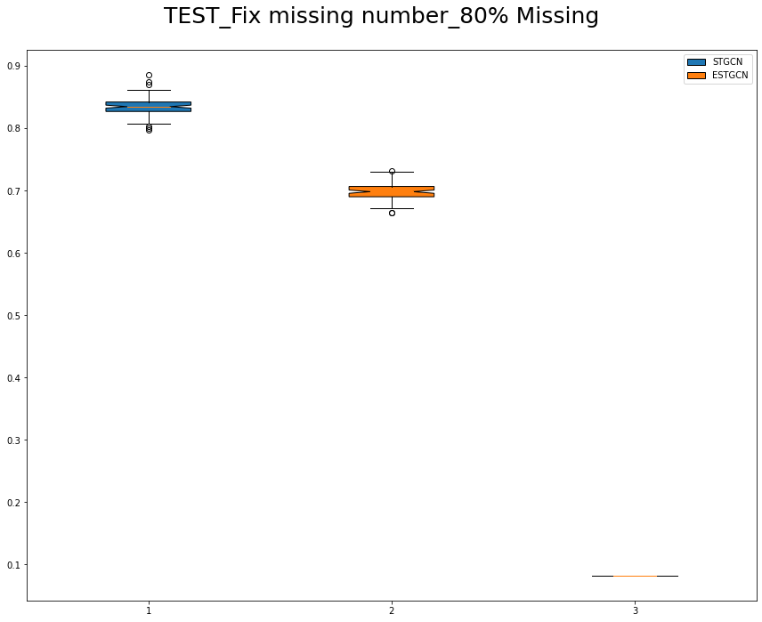
fig = plt.figure(figsize = (12,10))
ax = fig.add_subplot(111)
bp1 = ax.boxplot(stgcn_train2, positions=[1], notch=True, widths=0.35, patch_artist=True, boxprops=dict(facecolor="C0"))
bp2 = ax.boxplot(estgcn_train2, positions=[2], notch=True, widths=0.35, patch_artist=True, boxprops=dict(facecolor="C1"))
bp3 = ax.boxplot(gnar_train2, positions=[3], notch=True, widths=0.35, patch_artist=True, boxprops=dict(facecolor="C2"))
ax.legend([bp1["boxes"][0], bp2["boxes"][0], bp3["boxes"][0]], ["STGCN", "ESTGCN", "GNAR"], loc='upper right')
plt.text(x=0.5, y=0.94, s="TRAIN_Different missing number_80% Missing", fontsize=25, ha="center", transform=fig.transFigure)
fig.tight_layout()
plt.show()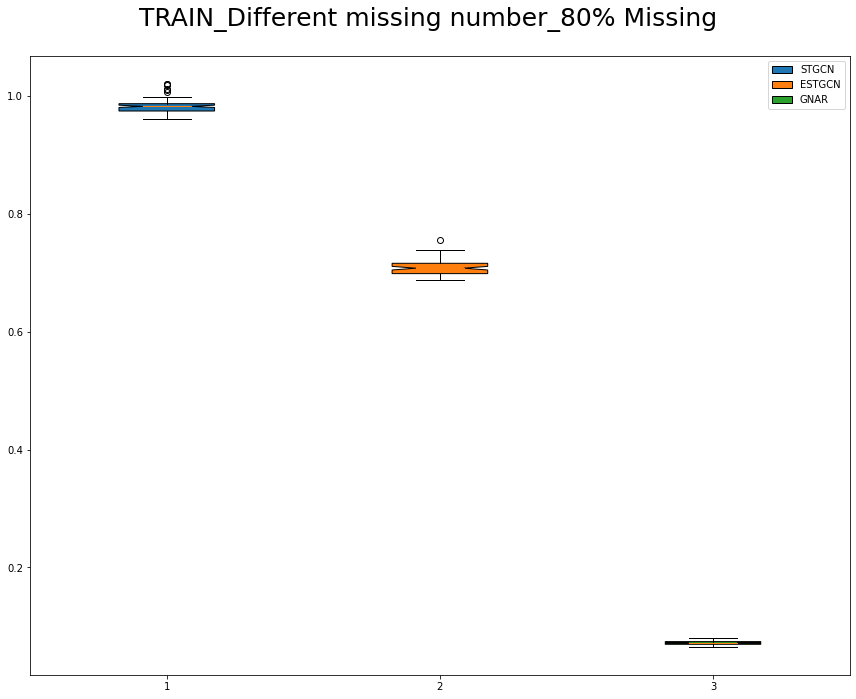
fig = plt.figure(figsize = (12,10))
ax = fig.add_subplot(111)
bp1 = ax.boxplot(stgcn_test2, positions=[1], notch=True, widths=0.35, patch_artist=True, boxprops=dict(facecolor="C0"))
bp2 = ax.boxplot(estgcn_test2, positions=[2], notch=True, widths=0.35, patch_artist=True, boxprops=dict(facecolor="C1"))
bp3 = ax.boxplot(gnar_test2, positions=[3], notch=True, widths=0.35, patch_artist=True, boxprops=dict(facecolor="C2"))
ax.legend([bp1["boxes"][0], bp2["boxes"][0], bp3["boxes"][0]], ["STGCN", "ESTGCN", "GNAR"], loc='upper right')
plt.text(x=0.5, y=0.94, s="TEST_Different missing number_80% Missing", fontsize=25, ha="center", transform=fig.transFigure)
fig.tight_layout()
plt.show()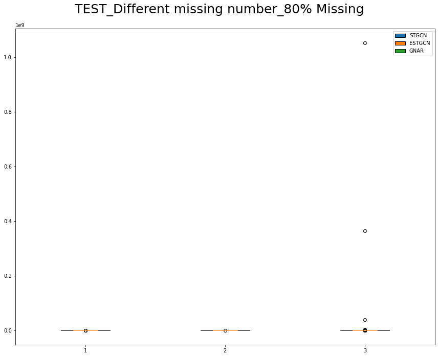